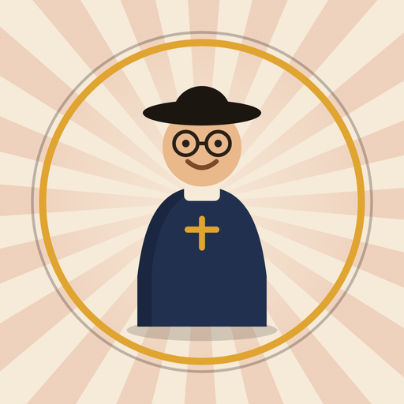

✣ A MISSÃO DE ✣
Padre
Albino
★ CONSTRUINDO CATANDUVA ★
Ajude o Padre Albino a reunir saúde, educação e recursos para erguer as grandes obras de Catanduva. Jogo educativo inspirado em história real.
🎮 Jogar agoraGrátis, sem anúncios e sem cadastro.
Funciona offline depois da primeira vez.
Instalar no celular
O jogo é um app de verdade — dá pra deixar um ícone na tela inicial sem passar por loja nenhuma:
- Android: abra Jogar agora e toque em Instalar no aparelho.
- iPhone: abra no Safari, toque em Compartilhar e depois em Adicionar à Tela de Início.
Inspirado na história real de Monsenhor Albino · Catanduva, SP
Política de privacidade